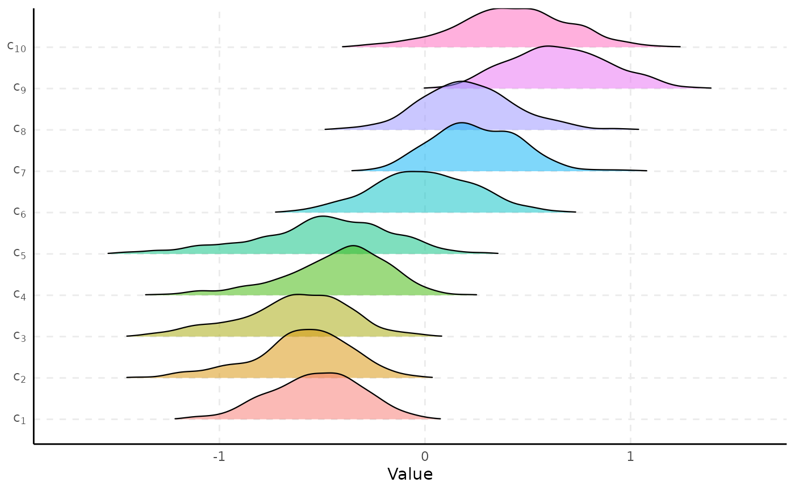
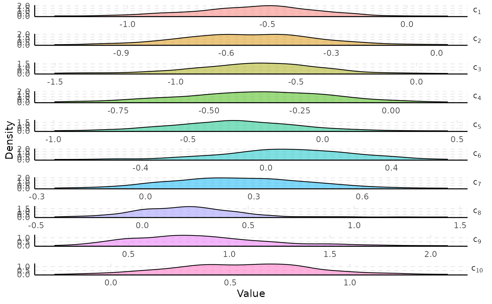
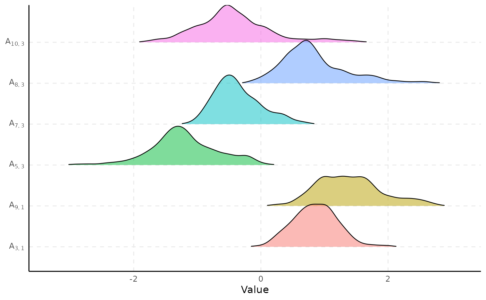

Draws posterior density curves directly from a fitted spifa
model, in one of two formats: overlaid (facet = FALSE, the
default; stacked, slightly-overlapping ridgeline plot via
geom_density_ridges – the more insightful
default for comparing many parameters' shapes and locations at a glance) or
faceted (facet = TRUE; one panel per parameter). Shows the
density shape only – for credible intervals and point estimates, see
plot_interval. The density itself is computed directly by
geom_density/geom_density_ridges
from the raw draws, reshaped via as_draws_df.
Usage
plot_density(
x,
select,
facet = FALSE,
burnin = 0,
thin = 1,
nshow = 10,
ncol = 1,
facet_scales = "free",
scale = 1.2,
...
)Arguments
- x
A fitted
spifamodel.- select
Parameters to plot, as in
plot_trace.- facet
Logical; if
TRUE, draw one panel per parameter; ifFALSE(default), overlay every parameter as a ridgeline plot. See Description.- burnin
Number of initial iterations to discard.
- thin
Thinning interval applied after
burnin.- nshow
As in
plot_trace.- ncol
Number of columns in the facet grid (
facet = TRUEonly); defaults to a single column.- facet_scales
The
scalesargument offacet_wrap(facet = TRUEonly): one of"free"(default; each panel gets its own x/y-axis),"free_y"(one shared x-axis, line shown only on the bottom panel of each column, matchingplot_trace's facet – useful for comparing parameters on a similar scale),"free_x", or"fixed". Parameters with very different value ranges can render compressed/hard to read with a shared x-axis.- scale
Amount of vertical overlap between ridges (
facet = FALSEonly), passed togeom_density_ridges. Defaults to1.2.- ...
Currently unused.
Examples
# \donttest{
data(ipixuna)
samples <- spifa(items ~ 1, data = ipixuna, nfactors = 3, ngp = 0, niter = 1000)
plot_density(samples, select = "c", facet = FALSE)
#> Picking joint bandwidth of 0.0549

plot_density(samples, select = "c", facet = TRUE)

# more than nshow (10) parameters: a random subsample is shown
plot_density(samples, select = "A", facet = FALSE, nshow = 6)
#> Picking joint bandwidth of 0.0867

# }